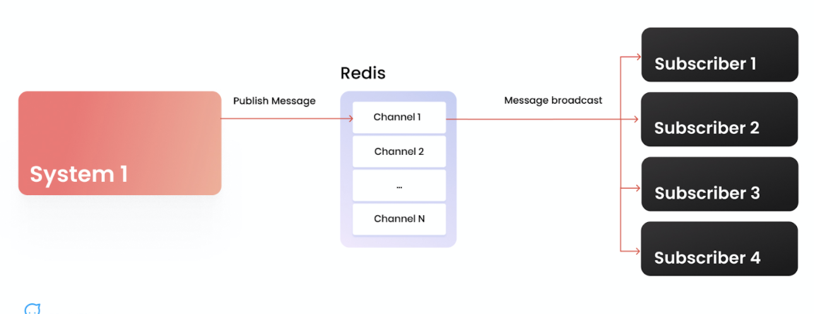
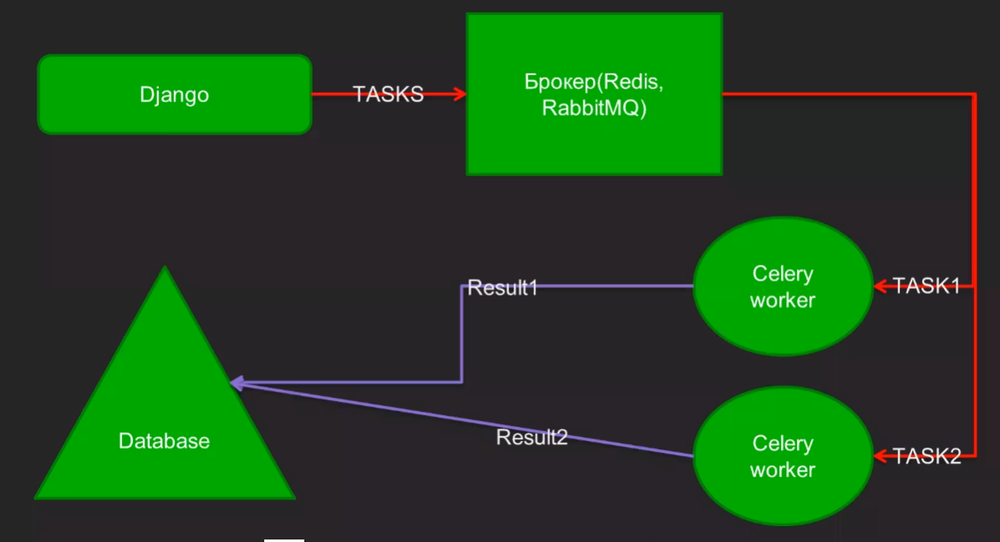

ЗВІТИ З ЛАБОРАТОРНИХ РОБІТ
З ДИСЦИПЛІНИ ІНТЕРНЕТ-ТЕХНОЛОГІЇ ТА ПРОЕКТУВАННЯ WEB-ЗАСТОСУВАНЬ


ЗВІТИ З ЛАБОРАТОРНИХ РОБІТ
З ДИСЦИПЛІНИ ІНТЕРНЕТ-ТЕХНОЛОГІЇ ТА ПРОЕКТУВАННЯ WEB-ЗАСТОСУВАНЬ
У ньому є якась кількість каналів (channel) — це пара «ключ-значення», де ключем виступає ім'я каналу (відоме як джерелу, так і обробнику), а значення — це черга повідомлень. Джерело повідомлень (або кілька) публікує повідомлення у канали. У свою чергу, обробники повідомлень (умовно, передплатники каналу) постійно моніторять канали на наявність повідомлень і в разі потреби забирають їх на обробку.
Celery + Redis + Django
